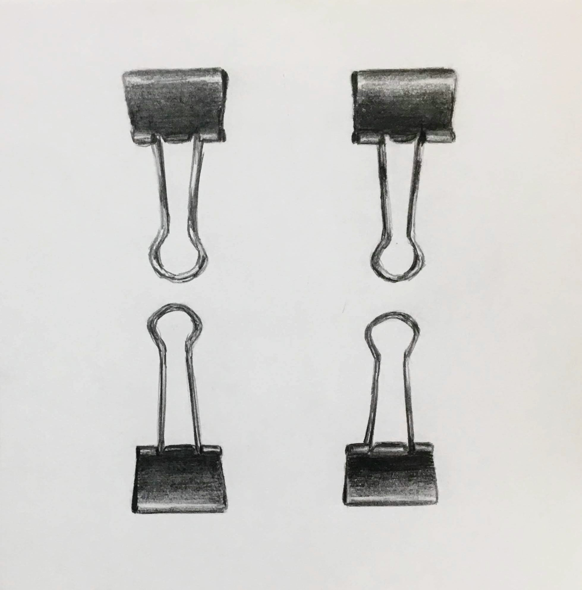
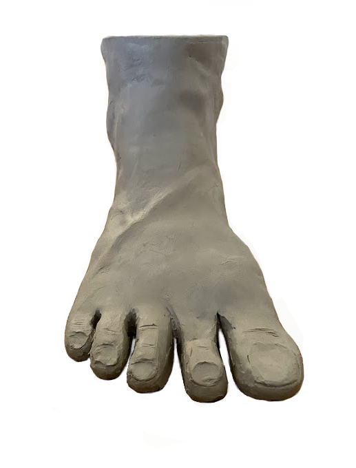
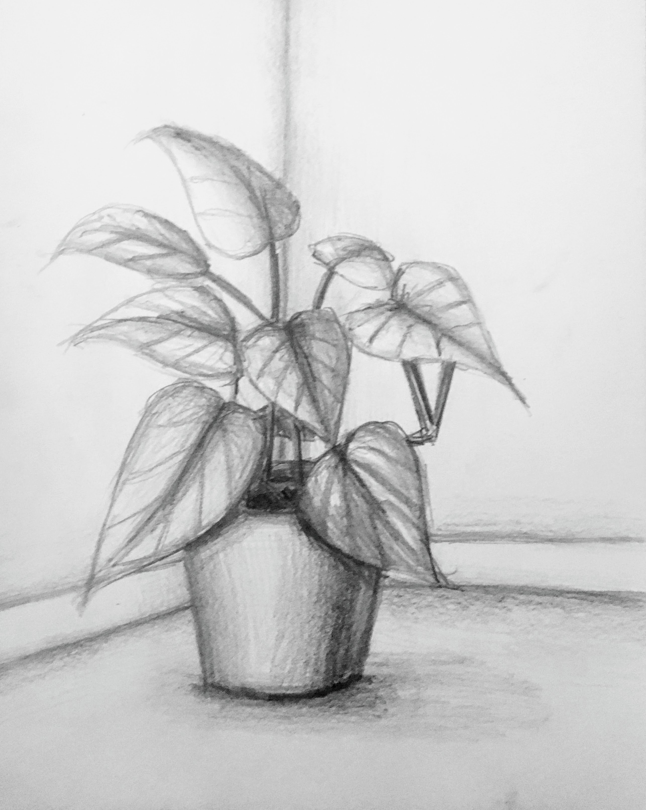
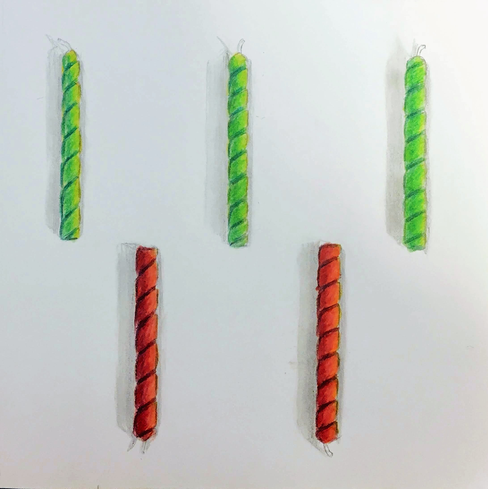

Education
University of North Carolina at Chapel Hill
Class of 2021
Computer Science B.S. | Studio Art Minor
- GPA: 3.928
- Pogue Scholar
- Accepted into Honors Carolina and the Scholars Program
- Pearl Hacks Director of Technology (2019-2021)
Relevant Coursework
- Computer Vision
- Machine Learning
- Modern Web Programming
- Advanced Algorithm Analysis
- Models of Languages & Computation
Work Experience
-

Software Engineer
Google, Corporate Engineering
August 2021 | NYC, NY
-
Software Engineering Intern
Google, Corporate Engineering POps Works
May 2020 - August 2020 | NYC, NY
- Developed a full-stack administrative tool allowing Staffers to manage and have an overview of thousands of interview profile groups, which help standardize interviewer-to-candidate pairings across roles at Google.
- Wrote unit tests, webdriver integration-style tests, and screenshot tests.
- Used Angular Typescript with NgRx for the frontend and microservices with Java for the backend.
-
Undergraduate Learning Assistant
UNC Chapel Hill, COMP 590: Software Archictectures
January 2020 - May 2020 | Chapel Hill, NC
-
Undergraduate Research Assistant
UNC Chapel Hill, VACLab
August 2019 - January 2020 | Chapel Hill, NC
- Created feature within lab’s healthcare data explorer to calculate and visualize a selected patient cohort's statistical distance from baseline datasets, helping UNC researchers recognize unconscious selection bias while studying cohort subsets.
- Developed using server-side Java + client-side Javascript + PostgreSQL; set up and used Shibboleth for SAML-based authentication.
-
Engineering Practicum Intern
Google, Cloud Storage Front End
May 2019 - August 2019 | NYC, NY
- Created pages exposing Datastore Import/Export in the Cloud Console, offering a user-friendly alternative to the corresponding gcloud commands.
- Prototyped functionality to manually failover a Redis instance from the Cloud Console, allowing users to see how their instance behaves during an unexpected failover.
- Integrated Cloud Billing API into the Redis price estimator, resulting in a more accurate estimation.
- Used Typescript + Angular with NgRx store and RxJS. Unit tested with Jasmine and Karma.
-

Technical Intern
SAS Institute, R&D Operations
May 2016 - August 2018 | Cary, NC
- Wrote a Python script to discover and attach hundreds of physical hosts into check_mk to automate hardware monitoring, alleviating the need for regular hardware check ups across 3+ data centers.
- Wrote shell scripts to automate adding thousands of virtual machines to Foreman and Puppet for life cycle and configuration management.
- Used Base SAS to visualize company printing data to give employees an aggregate view of their printing costs in the internal IT portal.
Projects
Under construction
Google Sheets to JSON
Pearl Hacks 2021 Marketing Site
Pearl Hacks 2021 Live Site
Pearl Hacks 2020 Marketing Site
Pearl Hacks 2020 Live Site
Swipe Share
Pokedex
2048
Disaster Tweet Recognition with NLP
Automatic Panorama Builder
Art
Self portrait (Digital Painting)

Four Paperclips (Pencil)

Sculpted Foot (Clay)
Vanity Still Life (Digital Painting)

Heart-leaf Philodendron (Pencil)

Potted Aloe (Pencil)

Assorted Candles (Colored Pencil)